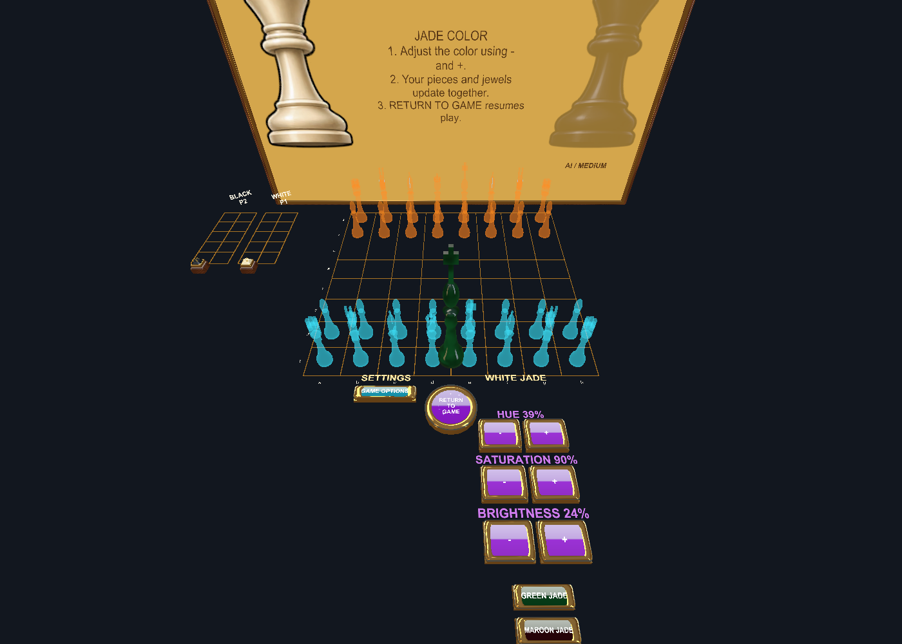

Living Table development log ·
The game keeps going.
So do we.
Your opponent leaves. Your game doesn’t have to end. That simple idea is the heart of Living Table: First Steps.
Our Quest 3 chess alpha lets you continue a game from your physical table into virtual play against AI, then return to the table with your progress intact. Now we have taken a hard look at the entire development journey—and what it will take to earn a place in your regular game night.

What we proved
The strongest result was continuity: one chess game across physical and virtual play. Repeated founder headset sessions exercised returning to the board, preserving placement and surviving visor sleep and wake. Hands-first controls, saved positions and three AI difficulty settings gave that idea a playable foundation.
What we learned
Recognition is more than spotting a piece. From a seated view, hands, shadows and neighboring pieces can hide the evidence. A camera that cannot see a square should not decide it is empty. Clear confirmation and a recoverable manual path matter just as much as the moments when recognition succeeds.
We also learned that a successful studio test is only the beginning. The next proof is someone new installing, learning and playing without us beside them.
Our next three priorities
- Make the first game dependable. Validate installation on a fresh account, simplify the first session and protect saves, alignment and physical/virtual transitions. Test across more boards, seated positions and rooms.
- Make returning worthwhile. Learn where players hesitate, which experiences they replay and what brings them back. Improve the free chess experience around those observations.
- Make personalization worth owning. Develop a small collection of original premium materials with clear previews and dependable purchase restoration. Gameplay should earn your time; optional art should earn your purchase.
Free play is the direction
Our commercial direction is free-to-play with optional purchases. The alpha’s jade customization is an early expression of that idea. A paid storefront is not live, and we are not taking preorders here. Additional licensed games are a longer-term ambition, subject to publisher agreements.
The submitted alpha remains unchanged. These priorities describe future commercial development, not a new release announcement.